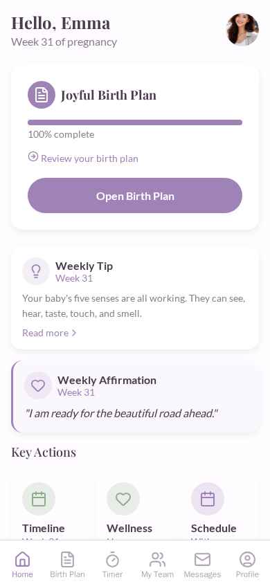

TODAY · PRODUCTION

PROPOSED · WEEK-DETAIL · SAME LANGUAGE, DEEPER SCREEN
Week 28 of 40
Your Pregnancy
Week 28
98 days to go · trimester 3 of 3

Your baby at week 28 — eyes opening for the first time
Length
14.8 in
Weight
2.2 lb
Size of
Squash
Leafing stage · 12 of 40 weeks
For baby
For mom
For birth
This week for your birth
Your baby's lungs are practicing breathing this week. Third-trimester appointments shift to every two weeks — a good moment to write your birth preferences into your plan and share them with your team.
Open the guide ›
Birth-prep checklist
Tour your birth setting
Know the entrance, parking, and check-in desk before labor day.
Draft your birth preferences
Your Joyful Birth Plan is 100% complete — review and share it with your doula & provider.
Pack the hospital bag
Two outfits you actually like, phone charger with the long cable, snacks you'll actually want.
Pre-register at your hospital
Ten minutes of paperwork now skips the clipboard at 3am in triage.
Weekly affirmation
"Every week, we grow closer to meeting you."